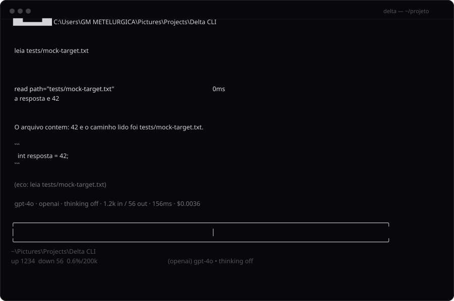

Lê e edita arquivos, roda comandos, usa git, consulta a web e guarda memória — com o modelo que você escolher. Um executável, sem Node, sem Python, sem instalador de framework.

O Delta conversa com o modelo que você escolher e executa o trabalho de verdade: lê código, escreve, roda testes, resolve git, baixa documentação. Tudo no terminal, com o mesmo modelo mental de um editor: nada de nuvem no meio.
ler, criar, editar com precisão, buscar no projeto e ver diff.
comandos, jobs em background, /terminal com a saída na tela.
status, diff, log, commit e checkpoint antes de mexer.
páginas, dados, documentação — e MCP para servidores.
fluxos salvos em SKILL.md que ele reaproveita sozinho.
fatos duráveis entre sessões e retomada por pasta.
delta # abre o CLI (retoma o último chat desta pasta) /login # escolhe o provedor e cola a chave (uma vez) /projects D:\dev\app # onde ele trabalha (fica salvo)
| comando | o que faz |
|---|---|
/terminal | roda um comando no shell e mostra a saída no chat |
/models | modelos dos provedores conectados (models.dev) |
/thinking | esforço de raciocínio do modelo |
/copy | copia a última resposta (ou arraste o mouse) |
delta wiki | abre a documentação no navegador |
delta --new | começa uma sessão nova |
Os arquivos ficam na página de releases do GitHub.